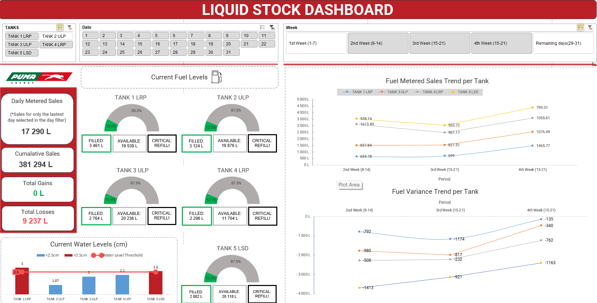

Extended Professional Experience 💼
Work delivered across energy, logistics, healthcare, and retail, focused on control, visibility, and decision support in real-world environments.
All things data, from raw files to business insight.
Building like an engineer, thinking like an analyst,
understanding like a business partner.
An Excel-based operational system designed to stabilise fuel stock control, consolidate pump and tank data, and provide clear daily visibility on site.

Work delivered across energy, logistics, healthcare, and retail, focused on control, visibility, and decision support in real-world environments.
Exploratory work where I experiment, validate ideas, and refine how I think about end-to-end data systems.
A live behavioural analytics experiment observing how visitors move through this site, where they pause, explore, or leave... updated in real time.
Query-driven analysis focused on uncovering meaningful patterns and trends within real-world data.